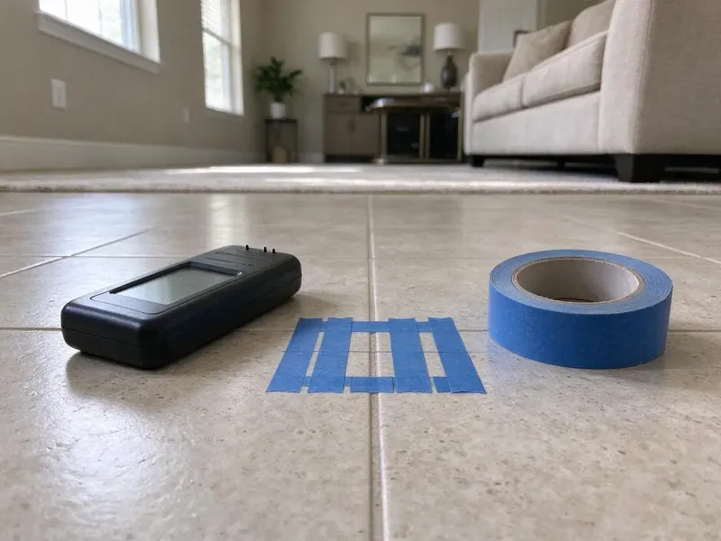

Residential Plumbing Service in Benton, AR
Slow drains, low pressure, a leak you can hear but not see. DGR Plumbing finds the cause in Benton, AR homes and fixes it the same visit when parts allow.
- Plumbers Who Work in Benton
- Fully Stocked Service Trucks
- Shoe Covers and Drop Cloths
- Same-Day Home Repairs

Need a Home Plumber in Benton, AR?
Call (501) 251-9708 and a licensed plumber will walk you through the next step.
Residential Plumbing Service in Benton, AR From Licensed Plumbers
DGR Plumbing sends a plumber with a pressure gauge and an inspection camera to Benton homes, because guessing at a leak costs you drywall. Low pressure usually turns out to be a bad pressure reducing valve, or just a clogged aerator. A slow drain gets cabled before anyone talks about jetting.
Our expertise includes:
- Leak detection with acoustic gear and thermal imaging.
- Faucet, toilet, shower valve and disposal repair
- Drain cleaning by hand auger or jetter.

Additional Plumbing Maintenance Services in Benton, AR
Our maintenance and specialty plumbing services in Benton, AR protect your home year-round and extend the life of every system.


Customers
Why Choose DGR Plumbing for Residential Plumbing Service in Benton, AR?
Homeowners keep calling us back for simple reasons. We show up inside the window we gave you, we explain the problem without jargon, and the invoice matches the price you approved at the start. Nothing gets tacked on at checkout.
- Flat Pricing, The price is written down before work begins, and it does not change halfway through.
- Upfront Pricing, You approve a flat price first, so there is no running clock.
- Respect Your Home, Shoe covers and drop cloths go down first, and we clean up before leaving.
Citywide Coverage
Condos and townhomes get the same service as custom houses across Benton and the towns around it. Evening and weekend appointments are often open. Condo work sometimes means coordinating with the building manager to shut down a riser, and we handle that call for you.
Experienced Team
Routine maintenance and full system overhauls both land on our schedule. Our plumbers handle PEX, copper, CPVC and PVC, which covers just about every supply and drain material found in Arkansas homes built over the last seventy years, plus the oddball repairs in between. Old cast iron gets handled gently.
Safety-First Approach
Permits get pulled where state and local codes call for them, such as water heater swaps and gas line work. Our work is done to code so it passes inspection. Failed inspections cost you time.
Trusted Certified Benton Plumbing Services Professionals
At DGR Plumbing, we take pride in licensed, certified plumbing services throughout Benton, AR. Those papers on the wall mean something. Our plumbers hold recognized industry credentials, and they follow strict safety and quality rules on every repair, installation and maintenance call we run.
Call Us Now PHCC Plumbing Contractor Recognition
PHCC Plumbing Contractor Recognition Better Business Bureau (BBB) Accreditation
Better Business Bureau (BBB) Accreditation Angi Certified Pro
Angi Certified Pro ISO 9001 Quality Management Certification
ISO 9001 Quality Management CertificationResidential Plumbing Service in Benton, AR: The Work We Do
Leak Detection and Repair in Benton, AR
Water stains on a ceiling rarely sit right under the leak. Homes here are split between crawlspace and slab construction, and crawlspaces allow easier access for repairs and repiping. Our techs use acoustic sensors and thermal cameras, then isolate lines with pressure tests, which lets us open one small hole in the right spot instead of cutting drywall all over the house. Repairs follow the same day when possible.

Drain Cleaning and Clog Removal in Benton, AR
Grease is the big one in kitchen lines. In bathrooms it is hair wrapped in soap scum, and we clear both with hand augers, sectional cable machines or a hydro jetter, depending on how far down the blockage sits and what the pipe is made of. A camera tells us if roots or a broken joint are behind a repeat clog.
Water Softener and Filtration Service in Benton
Homeowners near Benton on well water benefit from routine testing and the right filter to protect pipes and appliances. Scale shows up first as white crust on faucet aerators and a rumbling water heater. We put in and maintain whole-house softeners and carbon filters, including Kinetico and Pelican units, sized from a hardness test we run at your kitchen sink, not a guess. Then we set the regeneration schedule.
Water Heater Repair and Installation in Benton
A water heater works hardest in winter, when incoming water is coldest. We repair and install tank, tankless, gas and electric units from Rheem, Bradford White, Navien and Rinnai, and the usual culprits are a heavy layer of sediment or a thermocouple that has quit reading the pilot. No hot water is often a quick part swap. Replacements go in with an expansion tank and drain pan where code calls for them.
Faucet and Fixture Repair in Benton
Most dripping faucets need a cartridge, not a new faucet. The truck has cartridges for the big brands, Moen and Delta included, and when you do want new fixtures we install them, connect new braided supply lines, and check the angle stops under the sink while we are there. Old stops fail when touched.
Leak Repair and Slab Leak Service in Benton
On a slab foundation, a supply leak can run for weeks unseen. The usual clues are a warm patch of floor, a meter dial moving with everything off, or a sudden jump in the water bill. Nothing gets quoted until the leak is pinpointed. Fixes range from a direct repair to rerouting the line overhead or a full repipe when leaks keep coming back.
Sump Pumps and Basement Drainage in Benton
A sump pump only gets tested when it rains hard. Our plumbers swap failing pumps for cast iron submersibles and replace stuck floats and check valves, and we can add a battery backup so the pit keeps draining when the power goes out in a storm. You can test yours with a five-gallon bucket of water.

Emergency Home Plumbing in Benton, AR
Burst pipes do not keep business hours. We take emergency calls for burst lines, overflowing toilets and total loss of water across Benton, AR, and the dispatcher talks you through closing the main shutoff while the truck is on the way. The first visit usually stops the water and fixes the cause.
Residential Plumbing Service Near Me in Benton, AR
Our plumbers are in Benton houses every day. The trucks carry the parts most homes need, so a repair that would mean a supply-house run and a second appointment for another company usually gets finished on the first visit with us. Fewer return trips.
A local plumber has already seen your kind of house. We know which neighborhoods have galvanized pipe, which streets have clay sewer laterals full of roots, and how hard the water runs out of the tap in different parts of Benton. That shortens the diagnosis.
DGR Plumbing at a Glance
- Fully licensed plumbing team covering Benton, AR
- 24/7 emergency service with same-day scheduling
- Clear written estimates, no hidden fees
- 4.8-star rated by 871+ Arkansas customers
Benton Map
Benton Information
- Population
- 37,558
- Area codes
- Local
- Service area
- Benton and communities within 40 miles
- Nearby
- Little Rock, North Little Rock, Hot Springs, Sherwood
Water hardness and ground movement vary from one town to the next, so a good residential plumber in Benton, AR looks at the pipe and the pressure gauge before guessing.
Talk to a Plumber
Reach out to DGR Plumbing for honest, reliable plumbing from people who know the trade in Benton, AR.
Our Specialized Plumbing Services in Benton, AR
At DGR Plumbing, we handle the full list of plumbing services across Benton, AR. From leak detection to full system installs, our team works fast and charges fair prices on homes and commercial properties alike. Here are the core services we offer:


What to Expect From a Home Plumbing Visit in Benton, AR
The process is short. Diagnosis comes first, then the price.
Request a Quote
Call (501) 251-9708 and tell us what is going on. We give you an arrival window.
Diagnose and Price
Your plumber finds the cause and gives you a flat price in writing. Work begins only after you say yes.
Repair and Clean Up
We fix it, test it and clean up after ourselves. You get a warranty and a tip or two on preventing a repeat.
Frequently Asked Questions About Residential Plumbing Service in Benton
Most minor repairs run $150 to $450. Replacing a water heater runs $1,400 to $3,000, depending on size and whether it is gas or electric. You approve a flat price before any work begins, so the bill at the end matches what you agreed to.
Every repair comes with a written parts and labor warranty. We also register the manufacturer warranty on new fixtures and heaters for you, which matters because some water heater makers shorten the tank warranty if the unit is never registered. Keep a photo of the serial plate.
Yes. Every repair and install comes with a written parts and labor warranty, and the exact terms are printed on your invoice so you know what is covered and for how long before anything goes wrong. Keep that invoice.
Two leaks in a year is the tipping point for most homes. Polybutylene and galvanized pipe also tilt the answer toward a repipe, since patching one spot on a failing system just moves the next leak a few feet down the line. You get both prices side by side.
Start at the water meter. Shut off every tap and appliance, then watch the small leak dial, and if it still spins, look for warm spots on the floor, cracks in tile, mildew smell or a water bill that jumped without explanation. A pressure test confirms it.
Many do, especially anything that changes the system. New installations and gas line work generally need a permit from the Benton building department, and our team knows which jobs require one. We file the paperwork for you.
Keep grease out of the kitchen drain. Use strainers in tubs and showers, flush only toilet paper, and find your main water shutoff now, before an emergency, so you are not hunting for it with water on the floor. Older homes benefit from a yearly check.
Most repairs take one to three hours. A leaky pipe or clogged drain is often done in under two, while water heater installs take most of a day and full repipes can stretch over several days depending on the size of the house and access. We give you a timeline up front.
Hear From Customers Who Hired Our Plumbing Experts

Robert G.
The camera showed a full break in our clay sewer line near the street. DGR Plumbing replaced it with a trenchless pipe burst, so the only digging was two small pits in the yard. They let us watch the footage before and after.
Sewer Line Replacement · Benton, AR
Angela D.
Our sump pump quit during a storm and the water was an inch from the basement carpet. DGR Plumbing put in a new pump with a battery backup that same evening. We have had two heavy rains since. It kicked on both times.
Sump Pump · North Little Rock, AR
Laura S.
Our 40 gallon tank started leaking from the bottom after thirteen years. The tech hauled the old one out, set a new unit with a fresh expansion tank, and had hot water running in about four hours. He took the old tank with him too.
Water Heater Replacement · Pine Bluff, ARDiane F.
My kitchen faucet had dripped for months and I finally got tired of hearing it at night. DGR Plumbing came out the next morning, replaced the cartridge and the O rings, and tightened a loose base that was letting water under the sink.
Faucet Repair · Conway, AR
Rachel N.
Hard water was leaving white crust on every faucet and our dishwasher was struggling. The tech tested the water, recommended a softener sized for a family of five, and installed it with a bypass valve in one afternoon. The spots on our glasses are gone.
Water Softener · Little Rock, ARJessica T.
We were adding a gas range in a kitchen remodel and needed a new line run from the meter. The plumber pulled the permit, ran the pipe through the crawl space, and had it inspected and approved within the week.
Gas Line Repair · North Little Rock, AR